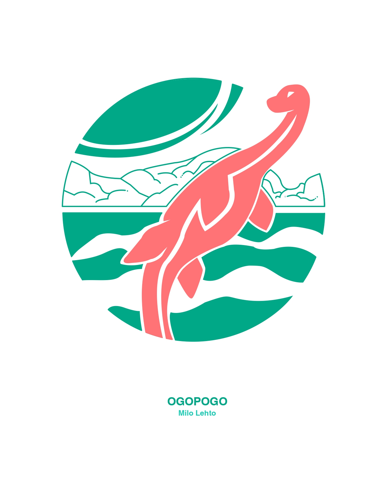

About Me!
Hello there! I am a second year graphic design student, originally from Thunder Bay! I enjoy camping, playing music, and all things spooky. I take a lot of inspiration from cartoon and animation in my designwork, and I do a lot of personal art in my free time.